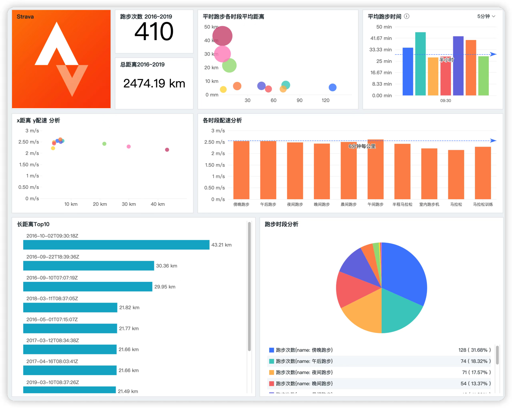

- 00 开篇词 可观测性，让开发和维护系统的你每晚都能睡个好觉！.md.html
- 01 以史鉴今：监控是如何一步步发展而来的？.md.html
- 02 基本概念：指标+日志+链路追踪=可观测性？.md.html
- 03 相互对比：可观测性和传统监控有什么区别？.md.html
- 04 OpenTelemetry：如何利用OpenTelemetry采集可观测数据？.md.html
- 05 构建可观测平台：应该购买商业产品还是自己搭建？.md.html
- 06 团队合作：不同团队如何高效共建可观测性？.md.html
- 07 软件开发：如何利用可观测性进行驱动？.md.html
- 08 建立 SLO：如何为系统可靠性的量化提供依据？.md.html
- 09 跟踪 SLO：如何基于错误预算采取行动？.md.html
- 10 实战 1：从 0 到 1 建立系统应用的可观测性.md.html
- 11 实战 2：基于可观测性数据进行问题分析和根因定位.md.html
- 12 实战 3：构建基于 Kubernetes 的系统可观测性.md.html
- 13 实战 4：建立软件持续集成和发布的可观测性.md.html
- 14 文化建设：如何构建可观测性的文化和框架_.md.html
- 15 展望未来：可观测性在未来的发展趋势是什么？.md.html
- 结束语 在实践中，用科学的方法分析和解决问题.md.html
- 捐赠
结束语 在实践中，用科学的方法分析和解决问题
你好，我是翁一磊。
到了要说再见的时候了，这是我们专栏的最后一课，感谢你能坚持和我一起学完。
回想刚开始筹备专栏的时候，老实说，那时候接到极客时间的邀请，我的内心除了兴奋，感受到的更多的是压力和对未来计划的迷惘。虽然我有时候也会写博客记录一些文字，但之前并没有如此系统地创作过一门课程。当时，我需要认真思考如何去解决这样一个问题。
所以在我们这个可观测性系列课程的最后一讲，我想结合自己的写作和生活经历，跟你聊聊分析和解决问题的一些感悟。
将大目标拆解为小目标
在真正开始写作之前，摆在我面前的总体目标，是需要完成 15 讲左右的课程正文（不包括开篇和结尾）。这其实是一个比较大的目标，我需要考虑如何系统性地讲解可观测性，并且最好能够提供一些例子让屏幕前的你可以跟着我一起实践。这时候我的想法其实很多，但一时间会感觉难以入手。
于是我就想起了我的跑步计划。平常跑步，我会给自己设定目标，比如一年 1000 公里。对于一些经常跑步的同学来说，这可能并不是一个很难达到的数字，但目标都是因人而异的，最重要的是能够超越自己，让自己成长。
我一开始看这 1000 公里，感觉有点遥不可及。但我发现，如果能把一个大目标切分成努力一下也够得着的许多小目标，坚持每天都有进步，就会慢慢看到质变。
就比如说这个一年跑 1000 公里的目标，分到每个月就是 100 公里。这里我不是简单地用1000除以12，而是留了一点余量，因为酷暑天或者大雪天，跑步的频次可能会有些下降。一个月如果要完成 100 公里，按照每次跑 5 公里来算，一个月也还有三分之一的时间可以休息，这样一想就没那么难了。
剩下的事情，就是在每周工作日尽量留出特定的时间跑步，周末有时间则可以跑更长的距离。这样一点点地开始，一点点地积累，一个很大的目标就被分解为一个个清晰、并且容易完成的小目标了。而且，随着小目标的积累和实现，完成大目标的信心也会越来越足。
可能你也想到了定目标的 SMART 原则，即目标必须是：具体的（Specific），可以衡量的（Measurable），可以达到的（Attainable），和总体目标具有相关性的（Relevant），以及具有明确的截止时间的（Time-based）。有关 SMART 原则就不在这里多说了。
其实，跑步和写作是同样的道理。所以当时我也对完成这门课程的大目标进行了拆解。首先我查阅大量的资料定好了每节课程的主旨和大纲。同时兼顾时间要求，我做了一个时间表，内容细化到每周需要完成的写作、修改、录音等事项。类似于每周跑步 25 公里的任务，同时也保留一定的灵活性。工作日即使忙，也尽量留出一两天来锻炼一下，这样周末的任务也不会太重。
留出专注的时间
正式的文章写作，对我来说也是一个挑战。因为平时的工作比较忙，很多时候就算晚上也有事务要处理。但写过文章的你应该会知道，码字是一件需要非常专注力的事情，而且专注的过程如果总是被打断，就得重新整理思路，这样一来就很难进入那种“心流”状态了，产出的效率也会很低。
其实不止是写作，很多时候我们都会需要“整块的”而不是碎片化的时间来保持专注。比如说阅读一本书，看一部电影，给小朋友完整地讲一个故事。那面对这个问题，应该如何解决呢？
我在这个过程中，最大的感受就是要找到适合自己的可以保持专注的时间。我们首先需要“观测”自己在什么时候效率最高。有些同学习惯早起，可以在清晨进行思考、写作，而有些同学，比如我，更习惯用晚上的时间做这些事情。如果平时的时间不够，对我来说，周末的上午也是可以利用的整块时间。
在专注的时候，你还要考虑给自己一个安静的环境。能在书房，就不要在客厅或者卧室，尽量保持房间的安静，没有打扰。另外就是一定要远离手机，这也是我这一路走来最大的感触。现如今，每个手机上都有无数的应用，我们每天能收到各种社交、新闻、视频等应用的消息提醒，放在身边只会是无穷无尽的干扰。能把手机也一起留在客厅是最好的。
只有这样，你才有机会专注在事情本身，有机会真正进入“心流”状态，集中精力高效产出。
多多动手实验
构建可观测性，不仅仅是理解纸面上的概念，更重要的是能够应用到实践中来并逐渐完善，这样才能够达到实际的效果。甚至有时候，我们也可以把它和工作、生活的其他方面结合起来，做一些有意思的事情。你会发现，如果能给自己培养一些爱好，很多时候就能够给生活带来不少亮色。
就拿我自己来说吧，跑步是我的一个爱好。我也会用手机 App 做一些记录，而且 App 本身就会提供一些图表、数据。
然而，有一天跑步的时候，我突然觉得这样的记录有点单调，这些图表表现的无非是跑步距离、时间、配速、消耗量等方面的平均值，还有跑步的最快速度。如果我想做一些关联的分析呢，比如随着距离的增加，配速的变化如何？当然，这些问题的答案我自己心里大概是有数的，但如果能够更加智能、系统性地进行分析，肯定会比自己的经验科学、准确得多。
于是我开始网上搜索实现方法，没想到还真看到一些利用跑步软件的 API 读取数据，然后进行图表化分析的例子。
不过不得不说，国内很多软件对这方面的支持确实不太友好，调用自己的数据还需要收费。但我之前用过一款国外的跑步软件 Strava，当时用它有两个目的，一是这款 App 支持运动手表的数据上传，二是以前在外企，有两个爱尔兰的同事（一个还是我老板）热爱骑车，也使用这个 App ，所以用这个软件可以和他们互动，也算是有一些社交的功能。
在网上也有 Python 的例子，可以直接调用 Strava API，然后用数据进一步的可视化处理。那说起 Python，我还真知道有款软件可以非常快速地切入使用，它包含了数据采集、展现和自定义，那就是观测云的 Function 函数平台。对于 Strava App，我可以通过 Function 对接 API 采集数据。
所以我就直接开始捣鼓了，步骤如下，非常简单。
- 调通 Strava 的认证，有点像云平台的 AK，有几个 Token。
- 有了 Token，装个 Function 工具，把网上找的 Python 代码转过去，稍微修改修改就可以直接利用了。
- 找个 DataKit 进行 Function 的数据对接，上报到观测云中心。这样，我就可以在观测云进行图表绘制了。
然后，就是看你想怎么样分析你的跑步数据了，比如说：
- 是不是随着跑步距离变长，我的配速也会下降不少？
- 不同的跑步时段，我的状态（配速）如何？
- 如果有 2 天我没跑，我是不是可以设置个告警，提醒我一下？
根据我自己的需求，我整了个仪表盘，发现在跑长距离时，我的配速确实更慢。也发现自己热爱在周末的傍晚跑步。跑完天色变暗，华灯初上，是该回家的时候了。

这也算是一个构建“跑步可观测性”的实例吧。
其实，不管是在维护系统稳定性的工作中，还是在生活中，我们都会碰到这样或者那样的问题。有些问题是第一次碰见，可能也没啥经验，难免会有些自乱阵脚。但是，希望通过这门课的学习，你不仅了解了概念，掌握了工具，还能够养成一种思维习惯。那就是在遇到问题的时候，放平心态，一步一步把复杂问题拆解开，对困难点进行专注攻坚，在实践中积累经验，获得成长。时间久了，相信任何问题对你来说就都不是事了。
 ](https://jinshuju.net/f/uE0LSA)
](https://jinshuju.net/f/uE0LSA)
最后，也分享给你我自己很喜欢的一句话：It’s not stress that kills us, it is our reaction to it. 压倒我们的，不是压力或者问题的本身，而是我们对它的反应。祝你在未来的工作和生活中，披荆斩棘，蒸蒸日上。
© 2019 - 2023 Liangliang Lee. Powered by gin and hexo-theme-book.